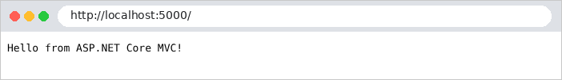
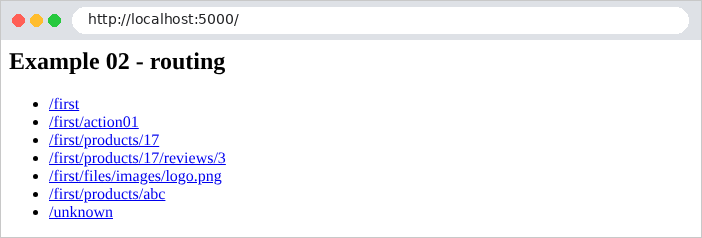
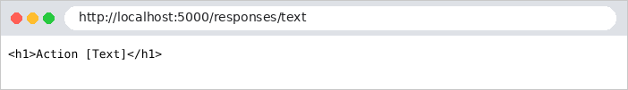
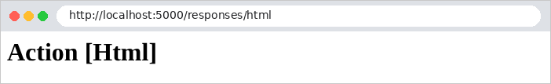

2. Controladores, acciones, enrutamiento
Este capítulo examina el camino que sigue una solicitud, desde el navegador hasta la acción que la procesa, y la respuesta que esa acción devuelve. Las vistas no se introducirán hasta el capítulo 4: aquí, las acciones devuelven texto o JSON directamente.
2.1. Ejemplo 01: La estructura de una aplicación ASP.NET Core MVC
El primer ejemplo es la aplicación [ASP.NET Core MVC] más pequeña posible. Además de los archivos [Example01.csproj] y [appsettings.json] presentados en la introducción, tiene dos archivos:
2.1.1. El punto de entrada: Program.cs
Analicemos este código:
- Línea 2: [WebApplication.CreateBuilder] crea el “constructor” de la aplicación. Lee la configuración (el archivo [appsettings.json], las variables de entorno, etc.), configura el registro y prepara la lista de servicios de la aplicación, [builder.Services]. El parámetro [args] contiene los argumentos de la línea de comandos;
- línea 5: se agregan a la lista los servicios que [MVC] necesita para localizar los controladores de la aplicación y ejecutar sus acciones;
- línea 8: se construye la aplicación. Después de esta línea, la lista de servicios ya no se puede modificar;
- línea 11: se habilitan las rutas declaradas por los controladores (los atributos [[HttpGet]], [[Route]]..., de los que hablaremos): sin esta línea, no se invocaría ninguna acción;
- línea 14: inicia el servidor web [Kestrel] y espera solicitudes hasta que se detenga la aplicación ([Ctrl-C]). Salvo que se indique otra cosa, el servidor escucha en el puerto 5000.
Este archivo no contiene ninguna clase ni ningún método llamado [Main]: es un programa de instrucciones de nivel superior. El propio compilador de [C#] envuelve estas instrucciones en un método llamado [Main], que sirve como punto de entrada del programa. Observe también la ausencia de directivas [using]: [WebApplication] pertenece al espacio de nombres [Microsoft.AspNetCore.Builder], que se importa automáticamente (véase [ImplicitUsings] en la introducción).
2.1.2. El controlador: Controllers/HomeController.cs
- Línea 1: el espacio de nombres que contiene la clase [Controller] y los atributos de [MVC];
- línea 3: el espacio de nombres de las clases de este archivo. Por convención, incluye el nombre del proyecto ([Example01]) y el directorio del archivo ([Controllers]). La forma [namespace X;] (sin llaves) se aplica a todo el archivo;
- línea 6: Un controlador es una clase public que hereda de la clase [Controller]. Por convención, su nombre termina en [Controller]. [ASP.NET Core] encuentra automáticamente los controladores de la aplicación: no es necesario declararlos;
- línea 9: el atributo [[HttpGet("/")]] asocia el método [Index] con las solicitudes [GET /]. Un método asociado de este modo a una ruta es una acción. Un atributo de [C#] se escribe entre corchetes, inmediatamente antes de lo que describe: agrega información al método, que el framework lee al iniciar;
- Línea 13: El valor devuelto por la acción es la respuesta enviada al navegador.
2.1.3. Ejecución
En una ventana de terminal abierta en el directorio [01-structure], escriba [dotnet run]. Después de la compilación, el servidor se inicia:
Los mensajes de inicio indican la dirección de escucha ([http://localhost:5000]) y el entorno de ejecución: [Production], el entorno predeterminado. Veremos que ciertos comportamientos de [ASP.NET Core] dependen del entorno ([Development] o [Production]). Solicitemos la URL [http://localhost:5000/] con un navegador:

y luego con [curl]. La opción [-i] muestra también los encabezados HTTP de la respuesta (aquí solo mostramos algunos):
Una cadena devuelta por una acción se envía con el encabezado [Content-Type: text/plain]: el navegador la muestra como texto sin formato, sin interpretarla. Esto difiere de [NestJS], que la enviaba como HTML ([text/html]). El ejemplo 03 mostrará cómo enviar HTML.
2.2. Ejemplo 02: Enrutamiento
El enrutamiento asocia una URL y un método HTTP (GET, POST...) con una acción. El ejemplo 02 tiene dos controladores:
El archivo [Program.cs] es idéntico al del ejemplo 01: esto es así para todos los ejemplos de este capítulo, salvo el último. El archivo [Controllers/HomeController.cs]:
- línea 9: la acción ya no devuelve una cadena, sino un [ContentResult]: una respuesta cuyo contenido y tipo se especifican;
- líneas 11–22: una cadena sin formato de [C#] ([raw string literal]), delimitada por tres comillas. Puede abarcar varias líneas y contener comillas sin necesidad de escaparlas. Los espacios que preceden a las ["""] de cierre se eliminan de cada línea;
- línea 24: el método [Content(text, type)] de la clase [Controller] genera un [ContentResult]. El tipo [text/html] indica al navegador que interprete el texto como HTML.
La acción [Index] devuelve así una página HTML que contiene enlaces a las acciones del otro controlador:

El archivo [Controllers/FirstController.cs]:
Analicemos este código:
- línea 6: el atributo [[Route("first")]], aplicado a la clase, establece el prefijo común a todas las rutas del controlador: sus acciones procesan las rutas de URL que comienzan con [/first];
- líneas 10–11: [[HttpGet("")]]: la acción [Index] procesa [GET /first]. La URL de una acción es la concatenación del prefijo del controlador y la ruta de la acción;
- líneas 17–18: la acción [Action01] procesa [GET /first/action01];
- líneas 24–25: la misma ruta, pero para el método POST: [[HttpPost]] reemplaza a [[HttpGet]]. También existen [[HttpPut]], [[HttpDelete]], [[HttpPatch]]... El nombre del método [C#] ([Action01Post]) es arbitrario: para el enrutamiento solo importan los atributos. Además, dentro de una misma clase, dos métodos no pueden tener el mismo nombre con los mismos parámetros;
- líneas 31–32: [{id}] es un parámetro de ruta: este segmento de la URL puede tomar múltiples valores. [:int] es una restricción: el segmento debe ser un entero; de lo contrario, la ruta no coincide. El valor del segmento se pasa al parámetro de la acción del mismo nombre, [id], que ya ha sido convertido a [int]: para [/first/products/17], [id] es igual al número 17. Este es el enlace de modelos ([model binding]), que el próximo capítulo examinará en detalle;
- líneas 38–39: dos parámetros de ruta, pasados a dos parámetros de la acción;
- líneas 44–46: [{**path}] es un parámetro "catch-all" ([catch-all]): acepta cualquier final de la URL, incluido [/].
Estos son los resultados de algunas solicitudes:
Para enviar una solicitud POST, use la opción [-X POST] de [curl]:
Un método HTTP que no es procesado por ninguna acción para esta ruta produce un error 405 ([Method Not Allowed]). El encabezado [Allow] enumera los métodos aceptados:
Por último, una URL que ninguna ruta procesa produce un error 404. Esto ocurre también con un identificador que no cumple la restricción [:int]: ninguna ruta coincide con [/first/products/abc].
La respuesta 404 de [ASP.NET Core] no tiene contenido ([Content-Length: 0]): el navegador muestra su propia página de error.

El capítulo 7 mostrará cómo reemplazar esta respuesta vacía por una página HTML.
2.3. Ejemplo 03: Respuestas de una acción
Lo que devuelve una acción determina la respuesta HTTP. El ejemplo 03 repasa los casos principales. El archivo [Controllers/ResponsesController.cs]:
Analicemos este código:
- líneas 9–12: una cadena se envía tal cual, con el encabezado [Content-Type: text/plain; charset=utf-8];
- líneas 16–19: la misma cadena, declarada como HTML (véase el ejemplo 02): el navegador la interpreta;
- líneas 23–26: un objeto se serializa como JSON, con el encabezado [Content-Type: application/json]. [new { lastName = ..., firstName = ... }] crea un objeto de un tipo anónimo: un tipo sin nombre generado por el compilador, útil para datos que se usan una sola vez. Los nombres de las propiedades de JSON se escriben en “camelCase” (primera letra en minúscula), siguiendo la convención de [JavaScript];
- líneas 30–33: un arreglo también se serializa como JSON. [["Mme", "Melle", "Mr"]] es una expresión de colección ([C#] 12), que aquí crea un arreglo de cadenas;
- líneas 39–41: cuando la acción necesita elegir el código de estado, devuelve un [IActionResult]: un objeto que describe la respuesta completa. Los métodos de la clase [Controller] generan muchos de ellos: [StatusCode(201, object)] produce una respuesta con código 201 ([Created]) cuyo contenido es el objeto serializado en JSON;
- líneas 46–48: [NoContent()] devuelve un código de estado 204 ([No Content]): “sin contenido”;
- líneas 53–57: una acción puede ser asíncrona ([async]): entonces devuelve una tarea ([Task<T>]), el equivalente de una promesa ([JavaScript]), y [ASP.NET Core] espera a que la tarea termine antes de responder. [await Task.Delay(500)] espera 500 ms sin bloquear el servidor: durante la espera, el hilo que ejecutaba la acción se devuelve al servidor, que puede usarlo para procesar otras solicitudes. Así se escriben todas las acciones que consultan una base de datos;
- líneas 62–64: un error previsto por el programa: [NotFound(object)] devuelve una respuesta 404 con contenido JSON. De igual manera, existen [BadRequest(...)] (400), [Unauthorized()] (401), [Forbid()] (403), [Ok(...)] (200)...;
- líneas 69–71: un error inesperado: la acción lanza una excepción que no maneja. [ASP.NET Core] responde entonces con un error 500 ([Internal Server Error]).
Respuestas recibidas:
En este caso de excepción, la respuesta no proporciona ninguna información sobre el error: los detalles podrían ayudar a un atacante. Se registran en la consola del servidor (aquí solo reproducimos el comienzo):
En un navegador, la diferencia entre [text/plain] y [text/html] es visible:


2.4. Ejemplo 04: Redirecciones
Una acción puede responder con una redirección: un código de estado 301 o 302 y un encabezado [Location] que indica al navegador qué URL solicitar a continuación. El navegador la solicita de inmediato, sin intervención del usuario. Las redirecciones son omnipresentes en una aplicación web: después de enviar un formulario con éxito, después de iniciar sesión, después de cambiar el idioma...
El archivo [Controllers/RedirectsController.cs]:
Analicemos este código:
- líneas 9–11: [RedirectPermanent(url)] genera una redirección permanente (código de estado 301, [Moved Permanently]): la dirección de la página ha cambiado de forma definitiva. Los navegadores y los motores de búsqueda pueden almacenar en caché la nueva dirección;
- líneas 22–24: [Redirect(url)] genera una redirección temporal (código de estado 302, [Found]), en este caso hacia una dirección calculada. [$"/page/{destination}"] es una cadena interpolada: la expresión entre llaves se reemplaza por su valor;
- líneas 29–31: [RedirectToAction(action, values)] redirige a una acción, no a una URL: [ASP.NET Core] genera por sí mismo la URL de la acción [Page] a partir de su ruta ([page/{name}]) y de los valores proporcionados ([name = destination]). Si la ruta de la acción llegara a cambiar, la redirección la sigue. [nameof(Page)] devuelve el nombre del método (["Page"]): un error tipográfico provocaría un error de compilación, lo que no ocurre con una cadena escrita a mano;
- líneas 42–44: se puede redirigir a otro sitio.
[curl] muestra la redirección sin seguirla:
Con la opción [-L], [curl] sigue la redirección, igual que lo haría un navegador. Vemos entonces las dos respuestas sucesivas:
Ambas acciones producen la misma redirección: una con una URL escrita a mano, la otra con una URL generada por [ASP.NET Core]. En el navegador solo se ve la página final; la barra de direcciones muestra la nueva URL:
2.5. Ejemplo 05: Los objetos de solicitud y respuesta
Cada solicitud está representada por un objeto [HttpContext], que contiene la solicitud ([Request]) y la respuesta que se está generando ([Response]). Una acción accede a ellos directamente mediante las propiedades [HttpContext], [Request] y [Response] de la clase [Controller]. A veces es necesario, y lo haremos en el caso de estudio (por ejemplo, para leer o establecer una cookie), pero hay que saber lo que se hace.
El archivo [Controllers/HttpController.cs]:
Analicemos este código:
- líneas 10–18: la solicitud: el método HTTP ([Request.Method]), la ruta ([Request.Path]), los parámetros de la URL ([Request.QueryString]), los encabezados ([Request.Headers]) y, mediante [HttpContext.Connection], la dirección (IP) del cliente. [?.] es el operador “condicional nulo”: si [RemoteIpAddress] es igual a [null], la expresión se evalúa como [null] en lugar de provocar un error;
- líneas 24–27: la acción agrega un encabezado a la respuesta y luego devuelve su valor normalmente, que [ASP.NET Core] envía. Este es el uso más habitual de [Response];
- líneas 32–36: la acción escribe ella misma la respuesta —código de estado, tipo y luego el cuerpo— mediante [Response.WriteAsync]. No devuelve nada ([Task], no [Task<T>]);
- líneas 41–45: el error que se debe evitar: escribir una parte de la respuesta y luego devolver un resultado. Una vez que los primeros bytes del cuerpo se han enviado al navegador, el código de estado y los encabezados —que se enviaron antes del cuerpo— ya no se pueden modificar.
Las respuestas obtenidas:
(La opción [-A] de [curl] establece el encabezado [User-Agent], que identifica al navegador)
En la última acción, el navegador recibe un código de estado 200 y el comienzo de la respuesta, en lugar del 404 solicitado. La consola del servidor informa del error:
En el resto del documento, las acciones casi siempre devolverán un resultado ([IActionResult]) y dejarán que [ASP.NET Core] escriba la respuesta. [Request] y [Response] solo se usarán para leer la solicitud y establecer cookies.
2.6. Ejemplo 06: Servicios e inyección de dependencias
Los controladores no deben contener lógica de aplicación; la delegan en servicios. Un servicio es un objeto común que [ASP.NET Core] crea y proporciona a las clases que lo necesitan: esto es la inyección de dependencias. El ejemplo 06 divide una pequeña aplicación en dos partes: productos y clientes:
2.6.1. El producto
Un record: una clase de datos declarada en una sola línea. El compilador crea las propiedades [Id], [Name] y [Price], un constructor que las inicializa y métodos de utilidad (comparación, visualización). El tipo [decimal] representa importes sin errores de redondeo.
2.6.2. El contrato del servicio: IProductsService
- Línea 4: una interfaz describe lo que puede hacer el servicio, sin especificar cómo. Las clases que usan el servicio solo conocerán esta interfaz;
- línea 6: [IReadOnlyList<Product>]: una lista que el llamador puede leer pero no modificar;
- línea 7: [Product?]: un producto, o [null] si ningún producto tiene este identificador (véase [Nullable] en la introducción).
2.6.3. La implementación: ProductsService
- línea 4: la clase implementa la interfaz: debe proporcionar todos sus métodos;
- líneas 6–11: los datos, aquí en memoria, en una lista inicializada mediante una expresión de colección;
- líneas 13–15: los dos métodos, escritos con la sintaxis [=>] (un método cuyo cuerpo es una sola expresión). [FirstOrDefault] ([LINQ]) devuelve el primer resultado que cumple la condición, o [null] si no hay ninguno.
2.6.4. El controlador ProductsController
- Líneas 11–13: inyección de dependencias. El controlador declara, en su constructor, que necesita un [IProductsService]; [ASP.NET Core] le proporciona el objeto registrado para ese tipo (véase más adelante). El controlador nunca llama a [new ProductsService()]: ni siquiera conoce esta clase, solo la interfaz. La implementación podría reemplazarse (por una versión que lea una base de datos, o por una versión de prueba) sin modificar el controlador;
- líneas 17–19: la acción delega en el servicio. La lista se serializa en JSON;
- líneas 23–30: [{id:int}] convierte el identificador; un producto inexistente devuelve una respuesta 404. [Ok(object)] devuelve una respuesta 200 cuyo contenido es el objeto serializado en JSON. [is null] comprueba si un valor es nulo.
2.6.5. El controlador ClientsController
- línea 9: un constructor primario ([C#] 12): el parámetro del constructor se escribe directamente después del nombre de la clase. Se puede usar en toda la clase: no es necesario copiarlo en un campo. Esta es la forma más compacta de inyección de dependencias; se usará en el resto de este documento. [ClientsController] recibe el mismo servicio que [ProductsController];
- líneas 12–15: lo usa para calcular el total de un carrito de compras. [Sum] ([LINQ]) suma los precios.
2.6.6. Registro de servicios
[ASP.NET Core] solo puede proporcionar un servicio si lo conoce: cada servicio se registra en [builder.Services], junto con su ciclo de vida. El archivo [Products/ProductsExtensions.cs]:
- línea 6: una clase estática, que contiene solo métodos estáticos;
- línea 8: un método de extensión. La palabra clave [this] antes del primer parámetro permite llamarlo como si formara parte del tipo de ese parámetro: [builder.Services.AddProducts()]. Así es como las bibliotecas de [ASP.NET Core] agregan sus servicios ([AddControllers], [AddAuthentication]...), y es una buena manera de agrupar los registros de una parte específica de la aplicación;
- línea 12: “Cuando una clase solicite un [IProductsService], proporciónele un [ProductsService].” [Singleton] es el ciclo de vida del servicio: una sola instancia, creada en la primera solicitud y compartida por todas las solicitudes. Existen otros dos ciclos de vida: [Scoped] (una instancia por solicitud) y [Transient] (una nueva instancia cada vez que se solicita). El capítulo 6 retomará este tema;
- línea 13: el método devuelve la lista de servicios para que las llamadas puedan encadenarse.
El archivo [Program.cs]:
- línea 1: el espacio de nombres del método de extensión;
- línea 8: el registro del servicio de productos.
Los controladores, en cambio, no se registran individualmente: [AddControllers] los encuentra todos, y [ASP.NET Core] crea un nuevo objeto controlador para cada solicitud, inyectándole los servicios que solicita.
2.6.7. Ejecución
El caso de estudio está estructurado exactamente así: controladores ligeros que delegan en servicios inyectados, descritos mediante interfaces y registrados en [Program.cs].